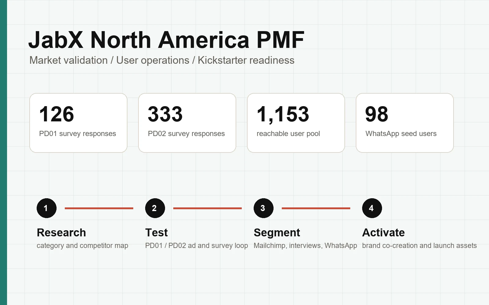
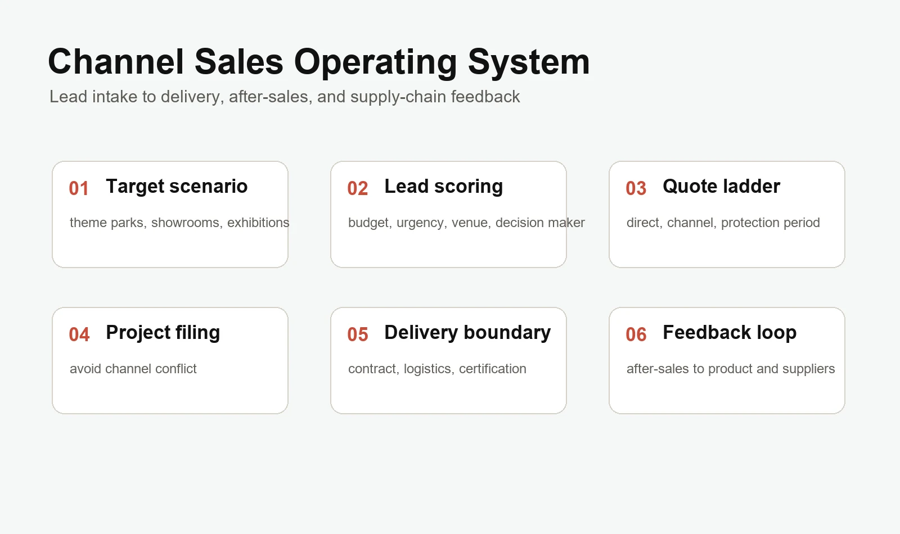
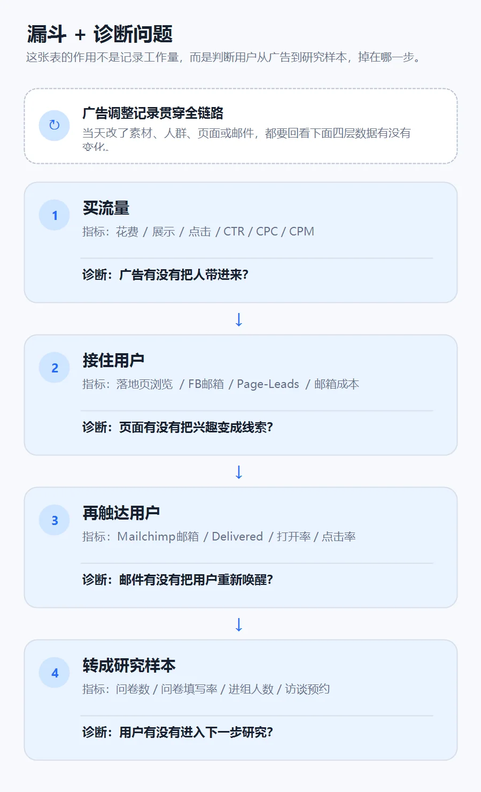
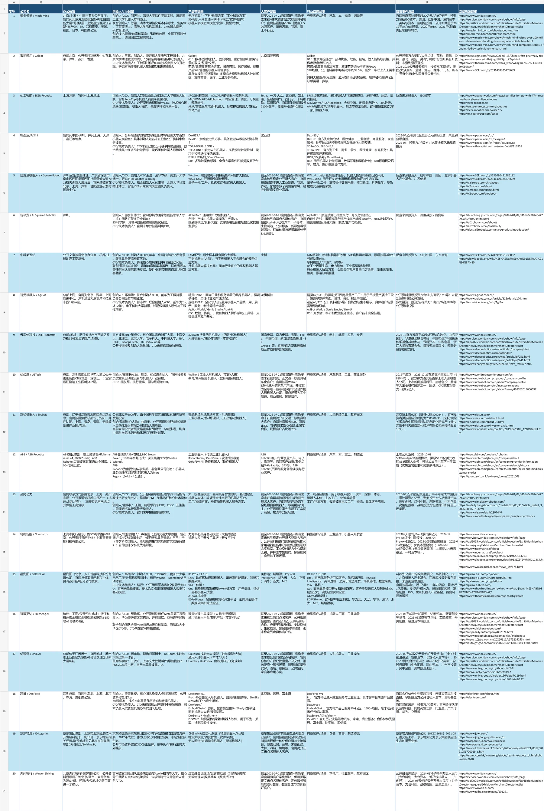

我主要做机器人 ToB 海外市场与商业化：把早期硬件产品的市场假设，推进成可以验证、可以成交、 可以交付、可以复盘的商业化路径。
在迁星智能，我参与过两个机器人相关项目：AI 格斗机器人从 0 到 1 商业化与海外渠道销售， 以及家庭健身机器人北美 PMF 验证与后 PMF 用户运营。
机器人 ToB 的核心不是只拿到线索，而是把客户判断、报价、渠道、交付和售后反馈放进同一个系统。
我也持续写机器人行业观察，公众号是 yuan-y00；小红书 yuan 主要做德语教学内容。
项目

把早期具身智能娱乐硬件从低价贴牌假设，重构为自有品牌、直销和渠道并行的商业化路径。 项目沉淀了线索、报价、合同、交付、售后和供应链反馈的闭环。

从 Kickstarter / CES 目标倒推北美高客单家庭健身机器人的产品定义、人群、价格和用户资产路径。 重点是判断用户真正购买的是拳击互动、AI 机器人概念，还是家庭训练场景。
以线索进入、客户判断、报价、渠道报备、交付和售后反馈为主线，把机器人 ToB 销售做成可追踪、 可分层、可复盘的系统。

用代理筛选、项目报备、报价梯度、渠道权限和售后责任边界，降低渠道冲突，并把客户现场反馈传回产品与供应链。

对广告、问卷、邮件和访谈邀约链路做漏斗诊断，识别用户从“留资”到“愿意深聊”的断点， 再调整触达和社群激活策略。

邮件群发的转化不足，说明后 PMF 运营不能只依赖一次性触达，需要用户分层、私聊邀约和社群承接。

把 KOL 合作从零散沟通改成可管理流程：筛选、报价、brief、素材交付、看板追踪和复盘标准。

用可核查字段整理公司、产品、技术路线和商业化证据，服务销售判断，也沉淀为公众号 yuan-y00 的机器人行业观察。
经历
北美 PMF 验证与用户运营
围绕 Kickstarter / CES 前置目标，验证北美用户对高客单家庭健身机器人的真实理解、价格接受度和可运营用户资产。
- 两个产品的 PMF 验证链路搭建
- 管理 1,153 用户池
- 完成众筹预热和产品迭代的双重目标
从 0 到 1 商业化与海外渠道销售
把早期娱乐硬件从低价贴牌假设，推进为自有品牌、直销和渠道并行的成交路径。
- 渠道、合同体系搭建 0 到 1
- 渠道管理 SOP
- 售后和供应链管理
健康服务渠道开发与市场推广
围绕科研项目和健康服务落地需求，开拓养老机构、中医诊所等合作渠道，推动“店中店”试点。
- 运营小红书、公众号、私域社群
- 将科研成果普惠大众
- 市场 0 到 1 冷启动
产品定义与 2B2C 验证
融合魔术与编程教育，定义儿童教育娱乐机器人产品，并组织早期资源验证 2B2C 模式。
- 管理 13 人团队
- 魔术师与教育机构资源整合
- 香港学校合作测试
美国 / 德国 / 沙特增长
负责多站点运营增长、评价修复和库存预测，推动新品、成熟产品线和新市场分别进入增长状态。
- 美国新品车充从 0 至 BSR
- 德国产品线周销售额 +58%
- 沙特站点 0 到 1
柔性结构研发与供应链
主导柔性结构从 0 到 1 研发，整合气囊加压与导热系统，推动供应链、量产、融资和展会推广。
- 163 家供应链资源
- 20 台到 500 台产能爬坡
- CES、CCEE 等展会露出
内容
联系
GitHub：yuan-y002426941529@qq.com · 19356010751